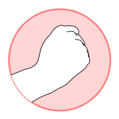
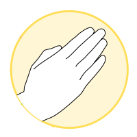
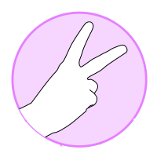
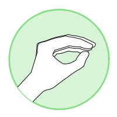
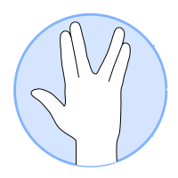

Rock Paper Scissors
Lizard Spock
Please enable your camera to play on the browser!!.

On this page, we are going to play rock paper scissors lizard
Spock in the browser! Then I will explain the basics of how it
works from the point of view of Machine Learning.
Intro:
I had the idea of implementing this game while studying CNN in Coursera.
I started with the basics, I needed to create a Data Set, so
I started with OpenCV, a green background and a cell phone (More in this post).
Then, I built a model, trained it and created a pipe
flow with OpenCV (More in this other post).
But I wanted everyone to play without having to install OpenCv or retrain
the model, so I got to work with Tensorflow js. After exploring
the documentation and looking for examples, I found this tutorial
"Transfer learning image classifier".
for which I found this example "Teachable Machine".
Not only is the code open (repo),
but they release a boilerplate version (repo boilerplate).
Then when I had some progress, I also found
this repository
from which I took some pieces of code and ideas.
Let's play on the browser!
Hold down the buttons to learn your gestures. Don't forget to enable the camera
It is recommended to take at least 30 examples for each gesture.
You:
    Computer:
How it works? (from the point of view of Machine Learning).
The main script is contained in main.js, which is compiled by browserify to the output file dist/build.js. The heart of the application is a CNN MobileNet, which is loaded with the values already trained with the ImageNet data set. Use MobileNet as a feature extractor, these features will be used to power a KNN Classifier, this will be the one that indicates the output.
i = 0;
async bindPage() {
this.knn = knnClassifier.create();
this.mobilenet = await mobilenetModule.load();
this.start();
}
The previous function creates a KNN classifier and loads the MobileNet model.
The next part to understand how it works is the next piece of code (below).
tf.fromPixels generates an image. later mobilenet.infer(image, 'conv_preds')
makes a predition, but we don't use the entire CNN, with the argument
'conv_preds' we tell the mobilenet package that we want to use it in a
'feature extractor' mode.
The training variable contains -1 if no button
is being pressed, or if a button is pressed, the number, for example in our case,
the 'Train Spock' button is equivalent to class 4, while 'Train Scissors' is equivalent to 2.
So if there is any button pressed "if (this.training! = -1)"
we add the predefined features along with the corresponding
class to the button in our KNN Classiefier.
In conclusion, we are NOT training a neural network in the browser,
we are training a simple KNN classifier.
async animate() {
if (this.videoPlaying) {
// Get image data from video element
const image = tf.fromPixels(this.video);
let logits;
// 'conv_preds' is the logits activation of MobileNet.
const infer = () => this.mobilenet.infer(image, 'conv_preds');
// Train class if one of the buttons is held down
if (this.training != -1) {
logits = infer();
// Add current image to classifier
this.knn.addExample(logits, this.training)
}
...
The last important piece, once added at least one class is to generate a prediction. For this we use knn.predictClass, which we assign to res. res contains as attributes the classes and the confidences of each class. With res.classIndex, we are getting the predicted hand gesture, which we will use to solve our game.
logits = infer();
const res = await this.knn.predictClass(logits, TOPK);
this.currentMove = res.classIndex;
The rest of the code has the function of printing the confidence of each class, set the text of the class with greater confidence in bold, animate the selection of the computer and the user, etc. Finally, as the game does not have a scoring system nor is it intended to be, the result is determined with a matrix, where the rows are the possible classes that the computer randomly chooses and the columns the classes that the user choose by gesturing in front of the camera, which as we have explained will be predicted with our "MobileNet + KNNClassifier" model. With the random selection of the computer and the selection of the user, it is enough to search where said row and column intersect.
Conclusion:
MobileNet is a very small model but with a lot of potential, sometimes it is not necessary to go deeper and add layers and neurons or choose complex and heavy models. It is much more efficient to use a combination of models, as in our case MobileNet + KNN.